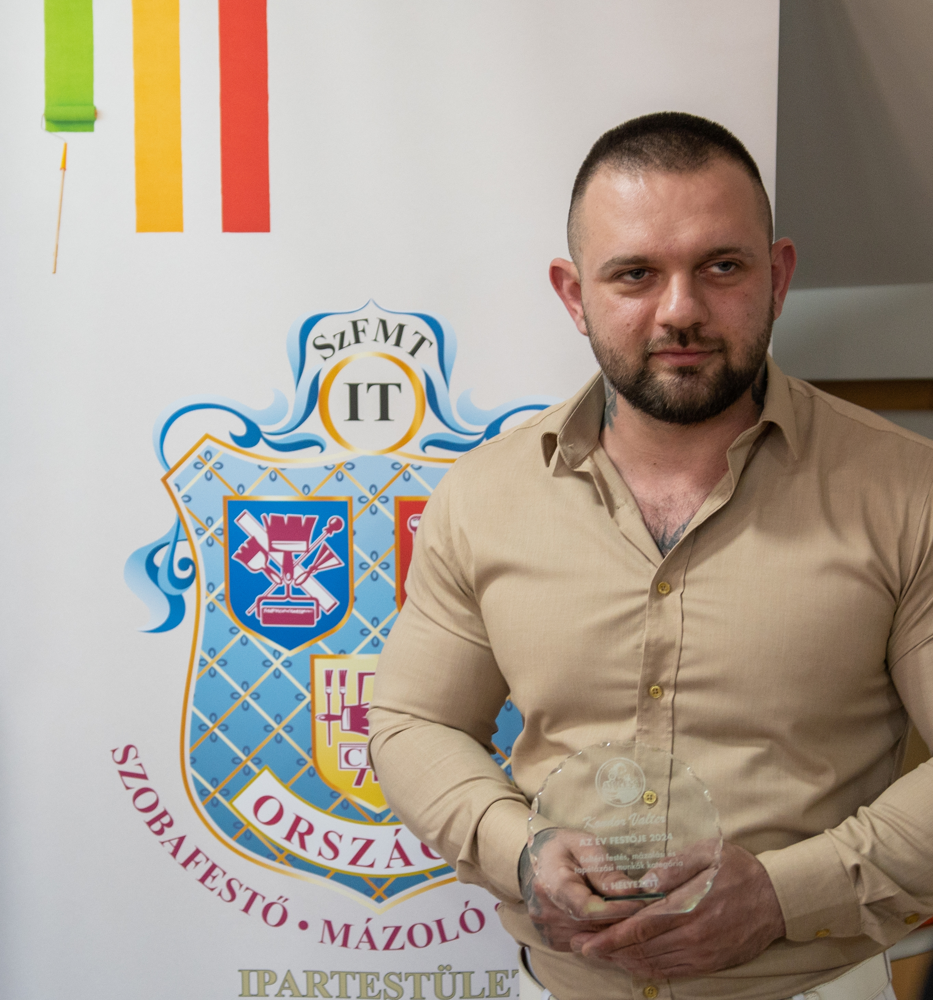

Üdvözöllek! Kondor Valter vagyok a Kondorék(Kondor Construction) alapítója. Középiskolás éveim után Édesapám mellett, aki közel 40 éves építőipari tapasztalattal rendelkezik kitanultam a festő, mázoló, tapétázó szakmát. Ezután folytattam tanulmányaimat és elvégeztem a kőműves és a szárazépítő szakmai képzéseket majd a magasépítő technikumot. Vállalkozásunk fő profilja a festés és szárazépítés. Célunk a folyamatos szakmai fejlődés, hogy tudásunk naprakész legyen anyagismeret és technika terén is. Munkafolyamatainkat a legmodernebb eszközökkel és gépekkel végezzük így a lehető legmagasabb színvonalat tudjuk nyújtani Megrendelőink részére. Nézd meg referencia munkáinkat és inspirálodj a saját felújítási terveidhez! 2024-ben Elnyertem az "Év festője díjat" a Szobafestő-Mázoló-Tapétázó Országos Ipartestület által.
